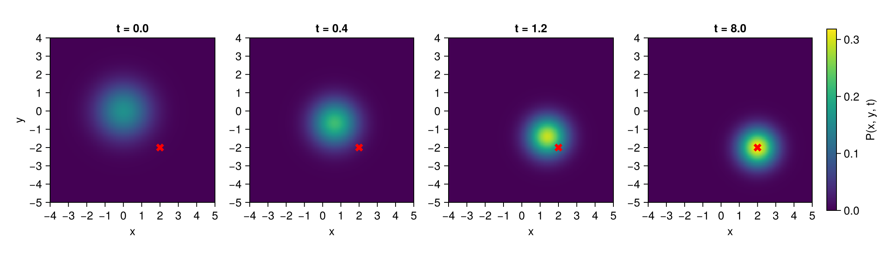
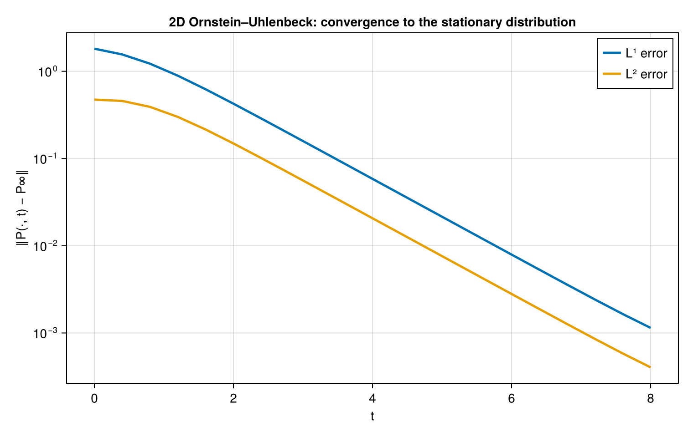

Advanced Examples
This section collects larger examples where the tensor-train representation is used as the main numerical representation, not just as a compression format. The first example solves a two-dimensional Ornstein-Uhlenbeck equation in QTT format; the same construction is the starting point for Kolmogorov backward equations and Feynman-Kac equations.
The complete script is available in examples/Ornstein2D.jl. The executable version below uses the same parameters as that script, but splits the implementation into smaller pieces so that the QTT construction is easier to follow.
Ornstein-Uhlenbeck Process In QTT Format
The Ornstein-Uhlenbeck equation is a useful proof-of-concept for solving higher-order linear partial differential equations with quantics tensor trains. In one dimension the density $P(x,t)$ satisfies
\[\frac{\partial P}{\partial t} = \theta \frac{\partial}{\partial x}\left((x-\mu)P\right) + D \frac{\partial^2 P}{\partial x^2},\]
where $\theta$ is the mean-reversion rate, $\mu$ is the long-time mean, and $D = \sigma^2/2$ is the diffusion coefficient. Equivalently,
\[\frac{\partial P}{\partial t} = \theta \nabla_d\left((x-\mu)P\right) + \frac{\sigma^2}{2}\Delta_d P.\]
The key observation is that the finite-difference derivative matrices, coordinate multiplication matrices, and Kronecker sums all have low-rank QTT representations. This lets us assemble the spatial generator directly in QTT/MPO form.
1. Choose A Quantics Grid
We discretize each spatial variable with $n = 2^d$ points. For the endpoint grid used in examples/Ornstein2D.jl, the interval is $[a,b]$ and
\[x_i = a + (i-1)h,\qquad h = \frac{b-a}{n-1},\qquad i=1,\ldots,n.\]
The script uses d = 8, so the physical density lives on a $256 \times 256$ grid represented by 2d QTT sites.
using TensorTrainNumerics
using CairoMakie
θ = 1.0 # mean-reversion rate
μx, μy = 2.0, -2.0 # long-time mean
σ = 1.0 # volatility
D = σ^2 / 2 # diffusion coefficient
d = 8
N = 2^d
a, b = -6.0, 6.0
h = (b - a) / (N - 1)
xes = collect(range(a, b, N))
N256The physical grid has $N^2$ points, but the QTT representation stores the two-dimensional state as a tensor train with $2d$ binary sites.
2. Build The One-Dimensional QTT Operators
The $d$-dimensional Laplacian is a Kronecker sum,
\[\Delta_d = \Delta_1 \otimes I \otimes \cdots \otimes I + \cdots + I \otimes \cdots \otimes I \otimes \Delta_1,\]
with
\[\Delta_1 = \frac{1}{h^2}\operatorname{tridiag}(1,-2,1).\]
The drift term is a divergence. In dimension $j$ we need a derivative matrix $D_j$ and a diagonal multiplication matrix
\[M_j = \operatorname{diag}(x_j-\mu_j).\]
In code, the one-dimensional blocks are:
∂x = (1 / (2h)) * (shift(d) - (id_tto(d) - ∇(d))) # central first derivative
∂xx = -(1 / h^2) * Δ(d) # second derivative
idd = id_tto(d)
Mx = ttv_to_diag_tto(qtt_polynom([-μx, 1.0], d; a = a, b = b))
My = ttv_to_diag_tto(qtt_polynom([-μy, 1.0], d; a = a, b = b))
MxMPO{Float64} with 8 sites
Physical dims : (2, 2, 2, 2, 2, 2, 2, 2)
Bond dims : [1, 2, 2, 2, 2, 2, 2, 2, 1]
Orthogonality : noneHere qtt_polynom([-μx, 1.0], d; a, b) represents the sampled function $x-\mu_x$ in QTT format, and ttv_to_diag_tto turns it into a diagonal QTT operator. The output is the compact MPO summary produced by the tensor-train show method.
3. Assemble The Two-Dimensional Generator
For the two-dimensional density $P(x,y,t)$,
\[\frac{\partial P}{\partial t} = \theta \partial_x\left((x-\mu_x)P\right) + \theta \partial_y\left((y-\mu_y)P\right) + D(\partial_{xx}P + \partial_{yy}P).\]
The QTT system matrix is assembled from Kronecker products:
\[A = \theta\left(D_x M_x \otimes I + I \otimes D_y M_y\right) + D\left(\Delta_x \otimes I + I \otimes \Delta_y\right).\]
In the script both spatial directions use the same one-dimensional derivative blocks:
A = θ * ((∂x * Mx) ⊗ idd + idd ⊗ (∂x * My)) +
D * (∂xx ⊗ idd + idd ⊗ ∂xx)
toarr(v) = qttv_to_array(QTTvector(v, 2, d, :serial))
mass(P) = sum(P) * h^2
AMPO{Float64} with 16 sites
Physical dims : (2, 2, 2, 2, 2, 2, 2, 2, 2, 2, 2, 2, 2, 2, 2, 2)
Bond dims : [1, 19, 19, 19, 19, 19, 19, 19, 4, 19, 19, 19, 19, 19, 19, 19, 1]
Orthogonality : noneThis is a plain TToperator with $2d$ sites. Since the sites are ordered serially, we can view vectors as two-dimensional QTT arrays by wrapping them with QTTvector(v, 2, d, :serial).
4. Construct And Normalize The Initial Density
The example starts from a separable Gaussian centered near the origin:
gx = function_to_qtt(t -> exp(-(a + (b - a) * t)^2 / 2), d)
gy = function_to_qtt(t -> exp(-(a + (b - a) * t)^2 / 2), d)
u₀ = gx ⊗ gy
u₀ = (1 / mass(toarr(u₀))) * u₀
u₀MPS{Float64} with 16 sites
Physical dims : (2, 2, 2, 2, 2, 2, 2, 2, 2, 2, 2, 2, 2, 2, 2, 2)
Bond dims : [1, 2, 4, 8, 11, 8, 4, 2, 1, 2, 4, 8, 11, 8, 4, 2, 1]
Orthogonality : [0, 1, 1, 1, 1, 1, 1, 1, 0, 1, 1, 1, 1, 1, 1, 1]The exact stationary density for the uncoupled two-dimensional Ornstein-Uhlenbeck process is a product Gaussian:
\[P_\infty(x,y) = \prod_{j=1}^2 \frac{1}{\sqrt{2\pi D/\theta}} \exp\left(-\frac{(x_j-\mu_j)^2}{2D/\theta}\right).\]
The script uses this expression to track convergence:
var∞ = D / θ
g1(x, m) = exp(-(x - m)^2 / (2var∞)) / sqrt(2π * var∞)
P∞ = [g1(xi, μx) * g1(yj, μy) for xi in xes, yj in xes]
maximum(P∞)0.318309886183790645. Evolve With Crank-Nicholson
For an autonomous linear system $\dot{u} = A u$, Crank-Nicholson applies
\[u^{k+1} = \left(I-\frac{\tau}{2}A\right)^{-1} \left(I+\frac{\tau}{2}A\right)u^k,\]
with time step $\tau$. The implementation calls crank_nicholson_method, solving each implicit TT linear system with ALS:
τ = 0.02
record_dt = 0.4
T = 8.0
block = round(Int, record_dt / τ)
n_blocks = round(Int, T / record_dt)
times = collect(0.0:record_dt:T)
density = Vector{Matrix{Float64}}()
errL1 = Float64[]
errL2 = Float64[]
function record!(v)
P = toarr(v)
P ./= mass(P)
push!(density, P)
push!(errL1, sum(abs.(P .- P∞)) * h^2)
return push!(errL2, sqrt(sum(abs2, P .- P∞) * h^2))
end
ψ = u₀
record!(ψ)
for _ in 1:n_blocks
global ψ = crank_nicholson_method(
A, ψ, ψ, fill(τ, block);
normalize = false, tt_solver = "als"
)
record!(ψ)
end
ψMPS{Float64} with 16 sites
Physical dims : (2, 2, 2, 2, 2, 2, 2, 2, 2, 2, 2, 2, 2, 2, 2, 2)
Bond dims : [1, 2, 4, 8, 11, 8, 4, 2, 1, 2, 4, 8, 11, 8, 4, 2, 1]
Orthogonality : center @ site 1The density is renormalized only for diagnostics. This makes mass loss or gain visible instead of hiding it inside the time stepper.
6. Check The Limiting Moments
A useful sanity check is that the mean approaches $(\mu_x,\mu_y)$, the variances approach $D/\theta$, and the covariance approaches zero:
let P = density[end]
mx = sum(xes .* vec(sum(P, dims = 2))) * h^2
my = sum(xes .* vec(sum(P, dims = 1))) * h^2
vx = sum((xes .- mx) .^ 2 .* vec(sum(P, dims = 2))) * h^2
vy = sum((xes .- my) .^ 2 .* vec(sum(P, dims = 1))) * h^2
cov = sum((xes .- mx) .* P .* (xes .- my)') * h^2
(; mean = (mx, my), target_mean = (μx, μy), var = (vx, vy),
target_var = var∞, cov, L1 = errL1[end])
end(mean = (1.999328512642629, -1.9993285126273312), target_mean = (2.0, -2.0), var = (0.4999988226005913, 0.4999988226006012), target_var = 0.5, cov = -3.415950830357685e-19, L1 = 0.0011432269293080736)The final-state diagnostics are close to the analytic targets: mean $(\mu_x,\mu_y)$, variance $D/\theta$, and covariance zero.
7. Show The Solution
The numerical solution can be converted back to two-dimensional arrays with qttv_to_array. The plot below shows the same snapshots as examples/Ornstein2D.jl.
snap = [0.0, 0.4, 1.2, 8.0]
cmax = maximum(P∞)
fig = Figure(size = (1100, 320))
for (k, t) in enumerate(snap)
ax = Axis(
fig[1, k], aspect = 1, xlabel = "x", ylabel = k == 1 ? "y" : "",
title = "t = $t"
)
heatmap!(
ax, xes, xes, density[round(Int, t / record_dt) + 1],
colormap = :viridis, colorrange = (0, cmax)
)
scatter!(ax, [μx], [μy], color = :red, marker = :xcross, markersize = 14)
xlims!(ax, -4, 5)
ylims!(ax, -5, 4)
end
Colorbar(
fig[1, length(snap) + 1], limits = (0, cmax), colormap = :viridis,
label = "P(x, y, t)"
)
fig
The error curves show the convergence of the QTT solution toward the stationary density.
fig = Figure(size = (760, 480))
ax = Axis(
fig[1, 1], xlabel = "t", ylabel = "‖P(·, t) − P∞‖", yscale = log10,
title = "2D Ornstein–Uhlenbeck: convergence to the stationary distribution"
)
lines!(ax, times, errL1, linewidth = 2.5, label = "L¹ error")
lines!(ax, times, errL2, linewidth = 2.5, label = "L² error")
axislegend(ax; position = :rt)
fig